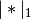
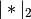

statsmodels.genmod.generalized_linear_model.GLM.fit_regularized¶
-
GLM.fit_regularized(method='elastic_net', alpha=0.0, start_params=None, refit=False, **kwargs)[source]¶ Return a regularized fit to a linear regression model.
Parameters: method :
Only the elastic_net approach is currently implemented.
alpha : scalar or array-like
The penalty weight. If a scalar, the same penalty weight applies to all variables in the model. If a vector, it must have the same length as params, and contains a penalty weight for each coefficient.
start_params : array-like
Starting values for params.
refit : bool
If True, the model is refit using only the variables that have non-zero coefficients in the regularized fit. The refitted model is not regularized.
Returns: An array, or a GLMResults object of the same type returned by fit.
Notes
The penalty is the
elastic netpenalty, which is a combination of L1 and L2 penalties.The function that is minimized is: ..math:
-loglike/n + alpha*((1-L1_wt)*|params|_2^2/2 + L1_wt*|params|_1)
where  and  are the L1 and L2 norms.
Post-estimation results are based on the same data used to select variables, hence may be subject to overfitting biases.
The elastic_net method uses the following keyword arguments:
- maxiter : int
- Maximum number of iterations
- L1_wt : float
- Must be in [0, 1]. The L1 penalty has weight L1_wt and the L2 penalty has weight 1 - L1_wt.
- cnvrg_tol : float
- Convergence threshold for line searches
- zero_tol : float
- Coefficients below this threshold are treated as zero.